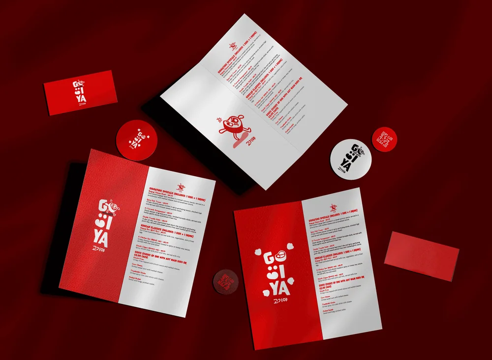

Gogiya is a Korean barbecue restaurant where friends and family gather around sizzling grills. As part of the 100th Brief Collab design challenge by Designer Briefs and House of Boring, I was invited to design a website that captured the energy, culture and appetite-driven experience of the brand.
Korean barbecue is a full sensory experience: the sizzle, the smoke, the communal energy around the table. The challenge was translating that into a single screen. Most restaurant websites feel static and forgettable. This one needed to make you hungry the moment it loaded, and get you to the order button.
People choosing where to eat tonight, usually on a phone, often in a group chat, who decide in seconds from the first screen. They want to see the food, know it is open, and order or book without hunting.
TO FILL: add any audience details the brief gave you
A fixed brief with a fixed deadline, judged alongside hundreds of other entries, so the design had to make its point in one screen.
A name and a cuisine that mix two scripts, Latin and Korean, which the typography had to respect without becoming a gimmick.
TO FILL: add the brief’s own constraints: required sections, formats, delivery date
I started by understanding the feeling before touching the design: warmth, hunger, community, the energy that fills a room when the grill starts sizzling. I looked at how restaurant sites usually fail (static, cluttered, menu as a PDF) and at food photography that makes you lean in.
TO FILL
Add what you looked at before designing: competitor or reference sites, conversations with the client or with users, and the two or three things you learned that changed the design.
The flow is deliberately short: land, see the food, read one line, press Order Now. Everything on the screen exists to shorten that path.
TO FILL
Add an image of the user flow (a sketch or a Figma/FigJam export is fine) and one line on the main path a user takes.
TO FILL
Add one or two early wireframes or screenshots of a previous version next to the final, and say what changed between them and why.
01 - Hero design
A full-bleed food photograph of bulgogi front and centre, no distractions, no clutter. The food does the talking. Typography sits confidently over the image without competing with it.
02 - Logo and typography
The Gogiya wordmark mixes bold Latin characters with Korean script and a playful character illustration, bridging cultures while keeping the brand fun and approachable.
03 - Copywriting direction
Never miss a delicious bulgogi. One line. Short, confident, and it makes you want to click Order Now immediately.
04 - Colour and mood
Clean whites and natural food tones let the photography breathe. Nothing fights for attention. The brand feels fresh, modern and premium without losing its warmth.

Submitted to the 100th Brief Collab design challenge, a global competition bringing together creatives from around the world around a single brief.
TO FILL
Add evidence: a metric (visits, orders, sign-ups, time on task), a quote from the client or a user, or a before/after screenshot. If there is none yet, say what you would measure and how.
What I would do next with a real client: test the hero against a version with a visible menu and opening hours, and measure which one gets more people to Order Now.